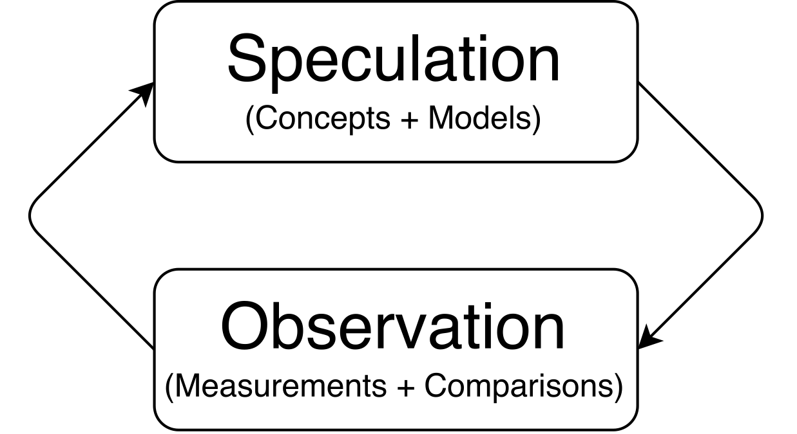

Models
The Scientific Method
Most of us learned the scientific method as a rote process, something like the following:
- Question
- Hypothesis
- Experiment
- Analysis
- Conclusion
But I don’t think that’s how any science, especially social science, really works. Science is imaginative. It’s creative. It’s much more like abstract painting or song-writing or poetry than replacing books in the library (the coldest, most mechanical task I can think of).
So if science isn’t rote hypothesizing and experimenting, what is it?
Let’s look at Albert Einstein. Here are some things he said about his approach to science:
When I examine myself and my methods of thought, I come close to the conclusion that the gift of imagination has meant more to me than any talent for absorbing absolute knowledge.
All great achievements of science must start from intuitive knowledge. I believe in intuition and inspiration…. At times I feel certain I am right while not knowing the reason.
Imagination is more important than knowledge.
I have no special talent. I am only passionately curious.
In a 1961, the influential political scientist wrote the following:
…I should like to suggest that empirical political science had better find a place for speculation. It is a grave though easy error for students of politics impressed by the achievements of the natural sciences to imitate all of their methods save the most critical one: the use of the imagination… surely it is imagination that has generally marked the intelligence of the great scientist, and speculation—often-times foolish speculation, it turned out later–has generally preceded great advances in scientific theory.
The scientific method is (sometimes serendipitous) interaction between speculation and observation.

My version of the scientific method is
- Concepts
- Models
- Measurements
- Comparisons
The first two components, concepts and models, we might refer to as “speculation.” I like this term, because it emphasizing the carefree, creative nature scientific notions. Many students are too afraid of being wrong. “speculation” frees us up to use our imagination.
Concepts
Concepts are simply mental constructs. For our purposes, concepts are words that we use to describe political entities. For example, we can use the concept of “democracy” and describe the United States as a democracy. We can use the concept of “liberal” and refer to Nancy Pelosi as a liberal.
Concepts are important because they allow us to communicate and reason precisely and accurately about political events. In general, ambiguous concepts need work. We need precise, well-defined concepts. They will never be perfect, but we should always push ourselves toward more precision and clarity.
Some concepts are easier to define precisely than others, for example. “Vote share” is easy to define. “Democracy” and “ideology” are not so easy.
To illustrate, answer the following question: What is a democracy? This is harder than it seems.
Concepts in political science tend to be more abstract and ill-defined. But it is essential to define our concepts as precisely as possible. Before we can answer questions about our concepts, we must know what our concepts mean!
Does negativity cause an increase or a decrease in turnout? To answer this, we certainly need to know if “The incumbent voted for Obamacare” is considered negativity.
Models
A model is simply a tentative explanation of observed phenomena, used to better understand the world. Models need not be accurate in every respect. A model is sometimes referred to as a theory, explanation, or story.
Models connect concepts in a causal fashion. One minimal model, for example, is that increasing the level of democracy in a country leads to more economic growth. In this case, we have two concepts, democracy and economic growth, connected causally. Of course, we’d want to elaborate a bit and flesh this model out into a fuller explanation. Why is it, exactly, that democracy causes growth?
We can also think of models as logical defenses or justifications of causal claims. For example, we might take two or three basic principles or axioms as given, and deduce causal claims from this. For example, we might assume that people behave in a way that benefits them most financially. We might also assume that the Republicans tend to adopt lower tax rates than Democrats. Therefore, it seems reasonable to conclude that an increase in one’s wealth makes them more likely to vote Republican.
Measurements and Comparisons
We’ll spend some time later in the semester talking about measurements and comparisons. But for now, simply note that measurements are simply quantifications of our concepts. In order to study a phenomenon systematically, we often want to assign numbers to the entities of interest. If we are interested in the concept of economic growth, for example, then the percent change in GDP is a good way to quantify that concept. Similarly, if we are interested in democracy, then we might develop a process for assigning each country a score from -10 to 10, where -10 represents the least democratic countries and 10 represents the most democratic countries.
Once we have these measures, we’ll want to make the appropriate comparisons. For example, we might want to compare the average economic growth in democracies and non-democracies.
Building Models
But how do you build a model? How do you put together a compelling logical defense of a causal claim?
A model of the model-building process:
- Step 1: Observe some facts. If these facts are puzzling, even better. (e.g., a large percentage of people vote, countries fight wars—notice that our models are what make these facts puzzling)
- Step 2: Look at the facts as though they were the end result of some unknown process (model). Then speculate about the process that might have produced such a result. We’re thinking in terms of causation here
- Step 3: Deduce other results (implications, hypotheses, or predictions) from the model.
- Step 4: Then ask yourself whether these other implications are true and produce new models if necessary.
Some rules of thumb for model-building:
- Rule 1: Think “process.” In particular, think about causality. One thing leads to another, which causes two changes, which both affect the concept we care about.
- Rule 2: Develop interesting implications. An interesting implication might be one that would otherwise (i.e., in the absence of the model) be counterintuitive. It might also be an implication for which we have the appropriate data.
- Rule 3: Look for generality. If you start with a theory about US voter behavior, can you generalize it to voting behavior in other places? Finding generalizations usually involves generalizing nouns.
- Rule 4: Realize that model-building is a slow process
- Rule 5: Talk about your ideas.
Evaluating Models
Truth
- Are the implications of the model correct?
- What about the assumptions? In practice, we don’t worry much about the assumptions for a few reasons. Assumptions are usually simplifications (e.g., politicians are office-seeking). Many good models are based on simple, but incorrect assumptions.
- Assumptions sometimes cannot be observed directly.
- Testing assumptions distracts your attention from the implications of the model. Get it the habit of exploring and evaluating the range of implications of the model.
- That said, all else equal, we would prefer a model based on correct assumptions.
- What about the assumptions? In practice, we don’t worry much about the assumptions for a few reasons. Assumptions are usually simplifications (e.g., politicians are office-seeking). Many good models are based on simple, but incorrect assumptions.
- In particular, the model should allow us to make predictions (note that we can have a predictive model, that is not necessarily causal. However, causal models should be predictive of future observations.)
Question: How could we evaluate the truth of our model of ACA opinions?
- Beware of circular or tautological models (e.g., people do what is in their self interest)
- Find critical experiments. The ideal approach is to compare alternative models. When we have two competing models, we’d like to find a situation in which the two model produce different implications. This is a powerful situation, because only one of the models can be correct.
- To the extent possible, always think in terms of alternative models, as opposed to a single model being right or wrong.
Beauty (e.g., Downs)
- Simplicity (office-seeking) - some assert that simpler models are more likely to be correct.
- Fertility (produces many implications)
- Surprise (why is turnout so high?)
Justice - does the model advance normative goals?
Review Exercises
- Describe (my view of) the scientific method. How do concepts, models, measurements, and comparisons all fit together?
- Summarize my model of the model-building process.
- What are the five rules of thumb for model-building?
- How do we evaluate models? Which of the three criteria do you feel are most and least important?
- What is a critical test and why is it important?
- In some countries, policy responds quickly to shifts in public opinion. In other countries, policy changes much more slowly. Why? Develop a model to explain responsiveness.
- Turnout varies substantially across countries. On average, turnout is about 48% in the U.S., 83% in Brazil, 87% in Denmark, and 93% in Chile. Many researchers believe that low turnout is a problem for a democracy and would like to see higher turnout in the US.
- Make up two theories or models that explain the variation in turnout across countries.
- Find some critical fact/situation/observation/prediction that distinguishes between the two models. Explicitly describe how it simultaneously confirms one model and contradicts the other.
- Based on your model, what changes might the U.S. make to increase participation in elections?